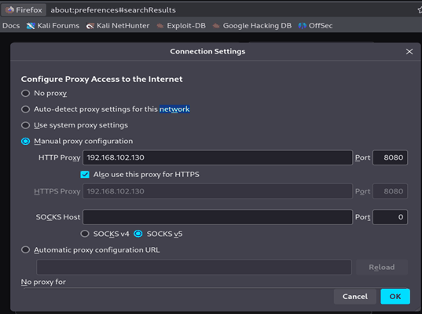
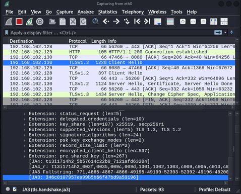

Detecting a man-in-the-middle with JA3
- What I did
- Compared JA3 fingerprints of TLS ClientHello messages from a normal browser session and one intercepted by mitmproxy.
- Tools
- mitmproxy, Wireshark with the JA3 plugin, Firefox
- Outcome
- The two JA3 hashes were different. Looking back, though, the difference most likely came from TLS session resumption rather than the interception itself. I explain why in the review below.
Objective
To test whether intercepting TLS with a man-in-the-middle (MITM) proxy produces a detectable change in handshake fingerprints, and whether JA3 hashing of ClientHello messages can tell intercepted sessions apart from legitimate ones.
Environment & Threat Model
- Three VMs: a client, an attacker running mitmproxy, and a webserver.
- Client configured to trust the attacker's proxy certificate.
- Wireshark with the JA3 plugin to capture and hash ClientHello messages.
- Threat model: the attacker can put themselves between the client and server by controlling the client's proxy settings.
Method
Setting up the interception
Using three VMs gave me control over both ends of the connection and let me add and remove the interception as needed. To put mitmproxy in the middle, I pointed Firefox on the client at the attacker's proxy.

Capturing both sessions
First I captured a baseline with the client's browser connecting straight to the server. I then repeated the same connection with mitmproxy in the middle and captured that too. I analysed each capture in Wireshark and noted the JA3 hash of the ClientHello.


Results
The JA3 hashes from the two sessions were different:
| Session | JA3 hash | Notes |
|---|---|---|
| Direct (legitimate) | a4a7efb11da858ab9c34dc7fbb241bcb | Firefox ClientHello sent to the webserver |
| Through mitmproxy | 346c0107957ea99b5b66f47bd9a59196 | Firefox ClientHello sent to the proxy, now including a pre_shared_key extension |
Review: what the hashes actually show
Coming back to this project, I realised the result doesn't prove what I originally thought. With mitmproxy in the middle there are really two separate TLS connections:
- Browser to mitmproxy. Firefox still sends its own ClientHello, so it should fingerprint the same as the direct session.
- mitmproxy to the server. mitmproxy opens a new connection with its own TLS library, and this is the one that should have a different JA3.
The ClientHello I hashed in Figure 3 includes Firefox-only extensions such as encrypted_client_hello and delegated_credentials, and its JA4 cipher hash matches the direct session exactly. So it was most likely Firefox's own hello to the proxy, not mitmproxy's. The main thing that changed between the two is the pre_shared_key extension, which appears when a TLS session is resumed, and adding an extension is enough to change the JA3 hash.
If I ran this again, I would:
- capture on the server side, or on the proxy's outbound interface, and hash mitmproxy's own ClientHello
- repeat each scenario several times to check the fingerprints stay stable between connections
- compare JA4 alongside JA3
Analysis
- How detection would really work: the useful signal is a mismatch at the server. A request whose User-Agent says Firefox, but whose JA3 belongs to a Python or OpenSSL client like mitmproxy, is a strong sign something is sitting in the middle.
- Limitations: JA3 can be evaded by attackers who copy a legitimate client's fingerprint, and fingerprints vary between browsers, versions and even resumed sessions, as this project showed. JA4 was created partly to deal with this, as JA3 struggles with TLS 1.3 and Chrome's randomised extension order.
- Learning outcome: built and analysed an intercepted TLS environment, and learned how client behaviour shows up in handshake metadata, including how easily that metadata can mislead.
Defensive Relevance
- Security teams can feed JA3 and JA4 into IDS tools to flag clients that don't match what they claim to be.
- Fingerprint databases need keeping up to date to keep false positives down.
- Fingerprinting works best combined with other telemetry, such as certificate details and traffic patterns.
Ethical Context
Carried out in my own lab. All interception was on systems I owned and managed.